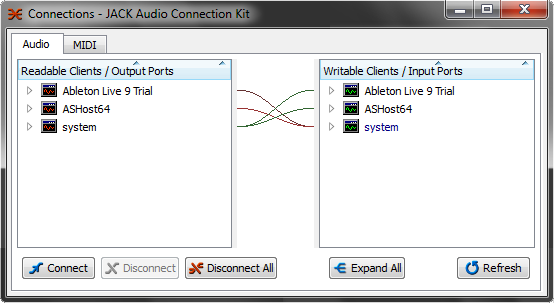

--- 
layout: asx 
title: Jack Audio  
section: jack 
---
{% include _set_lang.html %}


<section >
	<div class="container">
		<div class="row">
			<h2>Jack Audio Server</h2>
			<p>To overcome the limitations of high resolution audio drivers, which do not allow to use the audio system with two or more software DAW simultaneously, the AudioStation is equipped with Jack Audio Server / Jack Audio Connection Kit.</p>
			<p>With this feature you can use the AudioStation VST host / mixer together with other audio applications such as Ableton Live, Pro Tools, Cubase, Nuendo, Sonar, Wavelab and many others, sharing AudioStation audio inputs and outputs between applications.</p>
			
				<p>Experienced users will also use the Jack Audio Connection Kit (the audio patchbay of Jack) to route any audio signals between applications through virtual audio cables.</p>
			
		</div>
	</div>
</section>
